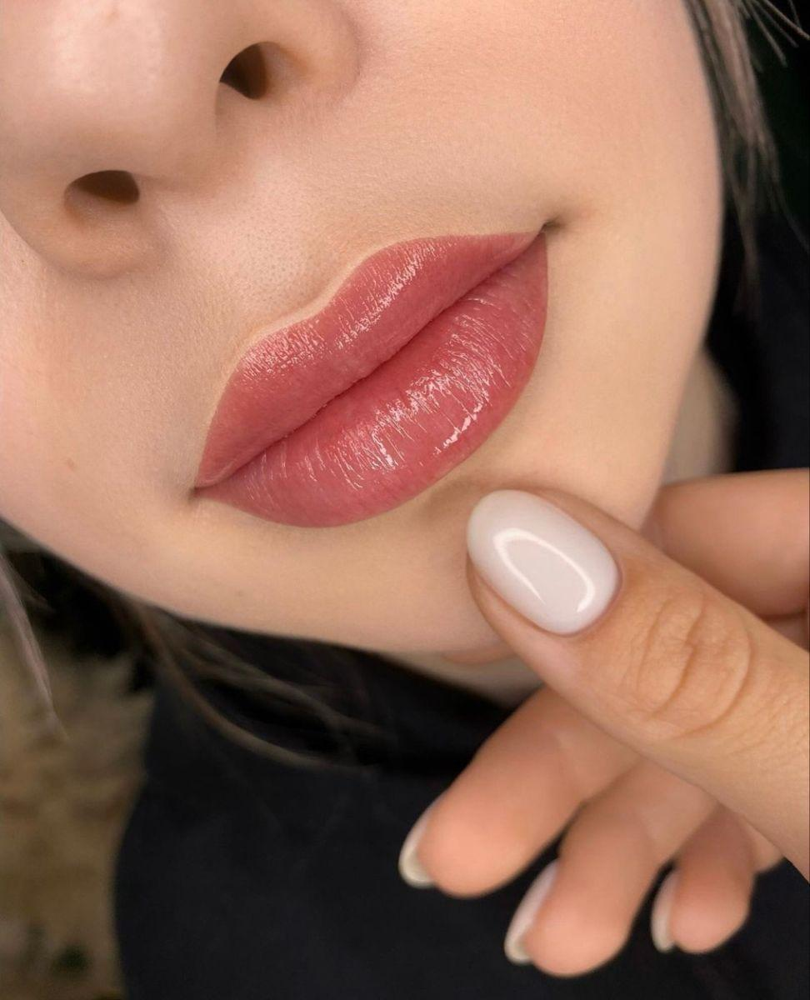
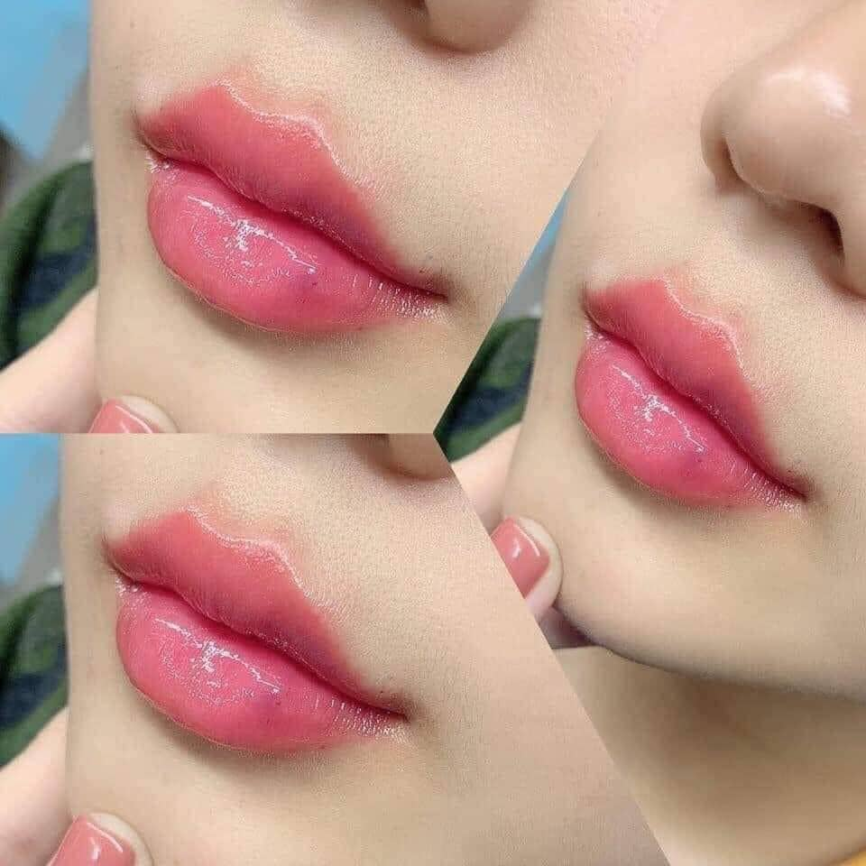

Phun Môi Collagen Là Gì? Có Thực Sự Tốt Không?
Những năm gần đây, phun môi Collagen trở thành một trong những dịch vụ được nhiều khách hàng quan tâm khi muốn cải thiện màu môi và vẻ ngoài tự nhiên. Tuy nhiên, không ít người vẫn băn khoăn liệu phương pháp này có gì khác so với phun môi thông thường và có thực sự phù hợp với mình hay không.
Trong bài viết này, ELLY PMU sẽ giúp bạn hiểu rõ về phun môi Collagen, ưu điểm, đối tượng phù hợp và những lưu ý quan trọng trước khi quyết định.
Phun Môi Collagen Là Gì?
Phun môi Collagen là kỹ thuật đưa sắc tố vào lớp thượng bì của môi, kết hợp với các dòng mực hoặc sản phẩm chăm sóc được thiết kế để hỗ trợ môi trông mềm mại và tươi tắn hơn sau khi hồi phục.
Mục tiêu của phương pháp này là cải thiện màu môi, giúp đôi môi có vẻ căng mịn hơn và tạo hiệu ứng tự nhiên, hạn chế cảm giác quá đậm. Tùy từng cơ sở, quy trình và sản phẩm sử dụng có thể khác nhau.
Phun Môi Collagen Có Gì Khác So Với Phun Môi Thông Thường?
Điểm khác biệt chủ yếu nằm ở quy trình chăm sóc, dòng mực hoặc sản phẩm được sử dụng và hiệu ứng thẩm mỹ mong muốn. Trong khi phun môi truyền thống tập trung vào việc tạo màu, nhiều gói dịch vụ Collagen hướng đến cảm giác môi mềm mại và căng bóng hơn sau khi hồi phục.



Những Ai Phù Hợp Với Phun Môi Collagen?
Phương pháp này thường được nhiều người quan tâm nếu môi nhợt nhạt, màu môi không đều, muốn có đôi môi tươi tắn mà không cần tô son mỗi ngày hoặc mong muốn hiệu ứng tự nhiên.
Trước khi thực hiện, kỹ thuật viên sẽ đánh giá tình trạng môi để tư vấn màu sắc và kỹ thuật phù hợp.
Ưu Điểm Của Phun Môi Collagen
Giúp môi tươi tắn hơn
Sau khi màu ổn định, đôi môi thường trông rạng rỡ và có sức sống hơn.
Tiết kiệm thời gian trang điểm
Bạn không cần phải tô son mỗi ngày để có màu môi tự nhiên.
Màu sắc đa dạng
Có nhiều lựa chọn như hồng đào, cam đào, đỏ cam, đỏ nâu, hồng đất hoặc đỏ lạnh. Kỹ thuật viên sẽ tư vấn dựa trên màu da và phong cách của từng khách hàng.
Hiệu ứng tự nhiên
Nếu được thực hiện đúng kỹ thuật, màu môi sau khi hồi phục sẽ nhẹ nhàng và hài hòa với khuôn mặt.
Phun Môi Collagen Có Đau Không?
Hiện nay, quy trình thường kết hợp bước ủ tê trước khi thực hiện nên đa số khách hàng chỉ cảm thấy châm chích nhẹ. Mức độ cảm nhận sẽ khác nhau tùy cơ địa và kỹ thuật thực hiện.
Phun Môi Collagen Giữ Được Bao Lâu?
Thông thường, màu môi có thể duy trì trong nhiều năm tùy theo cơ địa, chất lượng mực, kỹ thuật thực hiện và cách chăm sóc sau phun. Theo thời gian, màu sẽ nhạt dần một cách tự nhiên.
Chăm Sóc Sau Phun Môi Collagen
Để môi hồi phục tốt hơn, bạn nên giữ môi sạch, dưỡng môi theo hướng dẫn, không tự bóc lớp bong, uống đủ nước và hạn chế các thói quen làm môi khô. Việc chăm sóc đúng cách góp phần giúp màu môi ổn định hơn.
Những Hiểu Lầm Thường Gặp
Phun môi Collagen làm môi dày hơn?
Không. Phun môi chủ yếu tạo hiệu ứng về màu sắc, không làm thay đổi kích thước môi.
Phun một lần đẹp mãi mãi?
Không. Màu môi sẽ nhạt dần theo thời gian và có thể cần dặm lại nếu muốn duy trì vẻ tươi tắn.
Môi thâm có làm được không?
Nhiều trường hợp môi thâm vẫn có thể thực hiện, tuy nhiên kỹ thuật viên sẽ cần đánh giá mức độ thâm và tư vấn phương án phù hợp.
Checklist Trước Khi Phun
Chọn cơ sở uy tín.
Chọn màu phù hợp với màu da.
Nghỉ ngơi đầy đủ trước ngày làm.
Tuân thủ hướng dẫn chăm sóc sau phun.
Câu Hỏi Thường Gặp
Phun môi Collagen có phù hợp với mọi người không?
Không phải ai cũng phù hợp với cùng một kỹ thuật. Việc tư vấn trực tiếp sẽ giúp lựa chọn phương pháp phù hợp nhất.
Có cần dặm lại không?
Nếu màu môi nhạt theo thời gian và bạn muốn duy trì vẻ tươi tắn, có thể cân nhắc dặm lại theo nhu cầu.
Có thể chọn màu theo sở thích không?
Có, nhưng kỹ thuật viên sẽ tư vấn thêm dựa trên màu da, màu môi hiện tại và phong cách của bạn.
Phun môi Collagen có làm môi dày hơn không?
Không. Phương pháp này tạo hiệu ứng màu sắc và độ tươi, không thay đổi kích thước môi.
Kết Luận
Phun môi Collagen là lựa chọn phù hợp với những người mong muốn đôi môi có màu sắc tự nhiên và tươi tắn hơn. Điều quan trọng là lựa chọn cơ sở uy tín, kỹ thuật viên có kinh nghiệm và tuân thủ hướng dẫn chăm sóc sau khi thực hiện.